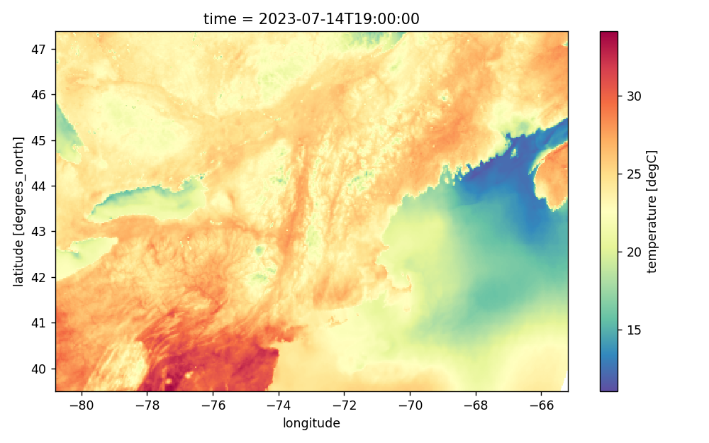

Endpoints
The following endpoints are available.
/weather
This is the basic entry point into our datasets.
| Parameter | Description | Notes |
|---|---|---|
| param | Valid parameters | Default: temperature, dewpoint_temperature, wind_speed, mean_sea_level_pressure, surface_solar_radiation, surface_thermal_radiation, total_cloud_cover |
| start | start datetime string YYYY-MM-DD |
Defaults to 3 days into the past. Provided time is interpreted as UTC. |
| end | end datetime string YYYY-MM-DD |
Defaults to 7 days into the future. Provided time is interpreted as UTC. |
| freq | H (hourly), D (daily), or M (monthly) |
Defaults to H (hourly) |
| resample_method | max, mean, min, or sum | When the frequency is set to daily (D) or monthly (M), use this to specify the aggregation method. |
| location | city name or zipcode | This value is used to look up latitude/longitude. |
| location_id | reference for location | This is handy when making requests for multiple locations. |
| lat | latitude(s) | If location is not provided. |
| lon | longitude(s) | If location is not provided. |
| north | latitude north | For bounding box. |
| south | latitude south | For bounding box. |
| east | longitude east | For bounding box. |
| west | longitude west | For bounding box. |
| model | era5, era5land, gfs, gefs, hrrr, cfs |
Use to specify dataset if applicable. |
| format | json, csv, or netcdf |
Defaults to json format. |
Example 1 - Requesting multiple locations
Example 2 - Requesting a region
Let's say we wanted to look at the regional weather forecast for all of New England. We can request the data by specifying the bounding box for New England as shown below:
This will return the data in NetCDF format, which we can see here:

/archivedforecast
Up to 4 years of HRRR model runs and 2 years of GFS runs (00z and 12z) are archived.
| Parameter | Description | Notes |
|---|---|---|
| param | Valid parameters | Default: temperature, dewpoint_temperature, wind_speed, mean_sea_level_pressure, surface_solar_radiation, surface_thermal_radiation, total_cloud_cover |
| location | city name or zipcode | This value is used to look up latitude/longitude. |
| lat | latitude(s) | If location is not provided. Up to 100 locations allowed. |
| lon | longitude(s) | If location is not provided. Up to 100 locations allowed. |
| utc_cycle | datetime of the run (00z or 12z) | This specifies the model run. E.g. 2023-07-01T12:00:00 |
| model | gfs or hrrr |
This specifies the archived model (defaults to gfs). |
/airquality
| Parameter | Description | Notes |
|---|---|---|
| param | Valid parameters | Default: CO, NO, NO2, O3, PM10, PM25, SO2 |
| location | city name or zipcode | This value is used to look up latitude/longitude. |
| lat | latitude(s) | If location is not provided. Up to 100 locations allowed. |
| lon | longitude(s) | If location is not provided. Up to 100 locations allowed. |
/epw
This API will return an EnergyPlus Weather (EPW) file for the given location and year (if applicable). The EPW is generated from ERA5 data on the fly and is not limited to airport locations. Downloading EPW file can also be done via our Weather Downloader App, but if you require many hundreds of EPW files, downloading via API is easier to do.
| Parameter | Description | Notes |
|---|---|---|
| location | city name or zipcode | This value is used to look up latitude/longitude. |
| lat | latitude | If location parameter is not provided. We suggest using lat/lon if you need to specify a precise coordinate. |
| lon | longitude | See above. |
| year | year for AMY | If not specified, a TMY file will be returned using the latest 15 years of data (180 months). |
/datasets
Use this to get an update of the data. If you'd like to check that the data has been updated before making a call, use this API endpoint. This API call does not use any data units.
This call will return data in JSON format that lists the datasets the available date range for each dataset as shown below.